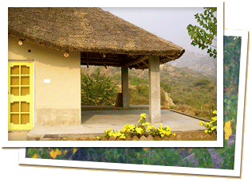

“We invite you with open arms to experience the natural beauty of the Punjab we grew up in. We'll take you back in time with our Punjabi country hospitality, traditional folk songs, and what some feel is the best food in India.”
~ Kaushal, host at Prakriti Farms
Please email us at untravel@indiauntravelled.com to plan and book your travels.
Punjab is synonymous with the warmth of its people, the richness of its food, the charm of its hospitality, and the earthiness of its beauty. Prakriti Farms is one of the few places where these notions of Punjab are true even today!
Located an hour away from Chandigarh, this organic farm stay is quietly nestled in the foothills of the Shivalik range, and is the perfect place to read, write, paint &draw, basically anything you love to do and never get the time to.
Nature enthusiasts can rejoice in the silence of the forest, watch bird formations cross over the farm, and wake up to a fog-engulfed sunrise. The more adventurous can hike up to forest caves for spectacular views of the valley below and the mountains above. As you warm yourself around a bonfire on a winter night, the soul of Punjab will come to life with its music & dances, and food so good you wouldn't want to leave!
Please email us at untravel@indiauntravelled.com to plan and book your travels.
Preserving the ambiance of life on the farm, Kaushal's family has built a charming little cottage at the "sunset spot" of the farm, overlooking the Shivaliks. The cottage verandah offers gorgeous views of the sunrise, the sunset and the starry night sky.
Just like traditional huts in Punjabi villages, The Cottage has a thatched bamboo roof and mud walls, which keep the inside temperature warm in the winter and cool in the summer. Tastefully furnished from within, the Cottage has a double bed made of teak wood, a small kitchenette, electricity supply, and an attached western style bathroom with a bathtub & running water.
For an outdoorsy experience, well-appointed Swiss and Safari tents are pitched in the backdrop of green & white hills, on a quiet plateau of the farm. The tents are furnished with comfortable beds & bedding, western-style toilets & showers, and receive constant electricity supply. The Swiss tents come with attached bathrooms, while the Safari tents have common ones. Hot water can be provided on request.
Please email us at untravel@indiauntravelled.com to plan and book your travels.
The curries of India are often homogenized in the citified version of Indian cooking, but not so on the countryside of Punjab! Food on the farm is cooked in traditional earthenware pots and tandoors with vegetables & ingredients grown on the farm, lending it a flavor and richness that is typical of authentic Punjabi food.
Breakfast typically consists of hot aloo paranthas caressed with fresh white butter, homemade dahi, scrambled eggs cooked Indian style (courtesy of the farm roosters), and a refreshing glass of lassi. Lunch and dinner vary with the seasonality of the vegetables grown, and range from Daal Handi to Makki ki roti & Sarson ka saag. Non-vegetarians can relish the mutton & chicken specialties of Punjab all year round.
You can choose to dine on the rooftop terrace, outside your cottage, or in your favorite corner of the farm. Don’t be embarrassed if you want to lick your fingers at the end of the meal; it’ll only be taken as a compliment to the food!
A true Punjabi experience is incomplete without a glass of Lassi, the traditional Indian yoghurt drink, made extra rich in its homeland. Chai, coffee and flavored Verka milk all have a Punjabi touch that's hard to describe in words.
Please email us at untravel@indiauntravelled.com to plan and book your travels.
You can spend your days at Prakriti soaking in the Punjabi culture, unwinding in the midst of nature, rediscovering your spirit for outdoor adventures, or volunteering at the organic farm.
Activities:
Please email us at untravel@indiauntravelled.com to plan and book your travels.
Accommodation for 2 people per night is priced as follows:
Swiss Cottages Rates
Please email us at untravel@indiauntravelled.com to plan and book your travels.
Prakriti Farms is located 45 km from Chandigarh and a 5-6 hour drive from Delhi. The closest railway station & bus stop for Volvo buses is at Ropar, and the closest airport is Chandigarh. Pick-up can be arranged from Ropar or Chandigarh.
October to April is the best time to visit the farm, when the days are warm and the evenings pleasantly cool. Please note that the farm remains closed from May to August, to brace the summer winds and the rains.
Many of us have pre-conceived notions about rural India. Leave them behind, travel with an open mind, and you’ll be pleasantly surprised with what you find.
Please email us at untravel@indiauntravelled.com to plan and book your travels.
Please email us at untravel@indiauntravelled.com to plan and book your travels.
“I really had a great time at the farm, great location, amazing food, and very nice, friendly and caring family. It really felt like a “home away from home” to me ☺” ~ Lakshmi, travelled in November 2016
“The whole group enjoyed their stay and Kaushal was a good host, the food was excellent and the tours well presented and informative. Many of our group were Greenies very keen on plants and environment. They were impressed by the environmental projects returning it to a sustainable use. Accommodation was good. We loved the dip pool as it was quite hot. and the performances were well presented and well received. I also read my "Out of Manali in the Rain" poem about travelling on a public bus from manali down the moutain on a wet himalayan day. The local people and family of Kaushal liked it very much.” ~ David Clark, travelled with a group from Australia in Sept/Oct 2012
“It was a great stay at Prakriti Farms. Same as we wanted, 'Peaceful and relaxing'. All of us have a very busy schedule here in Delhi, so we thought of going to a place where we could sit, chat and enjoy the nature, And Prakriti Farms was a right choice!! We loved the homemade food at the farm!! (and getting it our preferred time, was the best part). We Just want to thank you and Kaushal Family for giving us such a nice home-stay experience!! Hope to visit Prakriti Farms again.” ~ Harmeet Kaur, travelled with her friends in November 2012
“Thanks for the most awesome holiday we had. The place was great, food delicious, the customer handling was personal, kids loved the open space and importantly Priyanka and I acted as teenagers - first time in love. Thanks Guys/ the Dhaul family.” ~ Bidur Dhaul, travelled with his family in October 2012
“A marvellous place in all respects, natural beauty, care, great food! Will recommend!” ~ Casper Koene & Pia Kielding, travelled from Ireland in February 2012
“We really felt at home in Punjab! Fabulous hospitality and personal touch. Excellent food!” ~ Mrunal Shah, travelled from Gujarat with his wife in February 2012
“Ropar was mindblowing. Had a fabulous time with Kaushal & family. Lovely food, awesome place & really good ppl. Thank you so much :)” ~ Arunima Mazumdar, travelled from Delhi in August 2012.
Please email us at untravel@indiauntravelled.com to plan and book your travels.
All revenues generated via accommodation & travel activities at the farm are used for salaries of the farm staff employed from the neighboring villages, and the ongoing conservation & organic farming efforts at the forestland.
This forest became home to Kaushal during the many visits to the home of his grandparents in the neighboring village of Rail Majra. He recalls collecting wild berries and flowers, sleeping under starry skies, milking cows before the crack of dawn, sitting by the chulha waiting for hot and crisp rotis, stealing freshly prepared murraba from the earthenware pots, eating makki di roti and sarson da saag with fresh white butter dripping off the plate, lovingly poured by his grandmother. This was the Punjab he grew up in.
After many years of living in the cities, he returned to see farmers selling off their land and taking up small jobs in the factories nearby. The cultural landscape of the village had changed, the natural spring in the forest had dried up, the land was barren & devoid of all vegetation, and the entire village was exposed to flash floods. It was this ignorance and neglect of nature by the local community that made Kaushal & his family sit up and do something for the environment.
Practicing organic farming techniques, Kaushal’s family has slowly recreated the ecological environment of the private forest land they had inherited from their ancestors. Below are some tips to practice responsible travel while at Prakriti Farms:
© Copyright India Untravelled 2015. All Rights Reserved.
Maintained by Axisfusion.in
{kind=link}
{kind=link}
{kind=link}
{kind=link}
{kind=link}
{kind=link}
{kind=link}
{kind=link}
{kind=link}
{kind=link}
{kind=link}
{kind=link}
{kind=link}
{kind=link}
{kind=link}